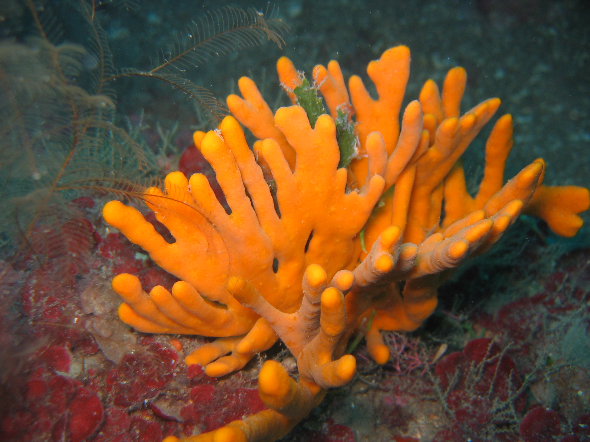
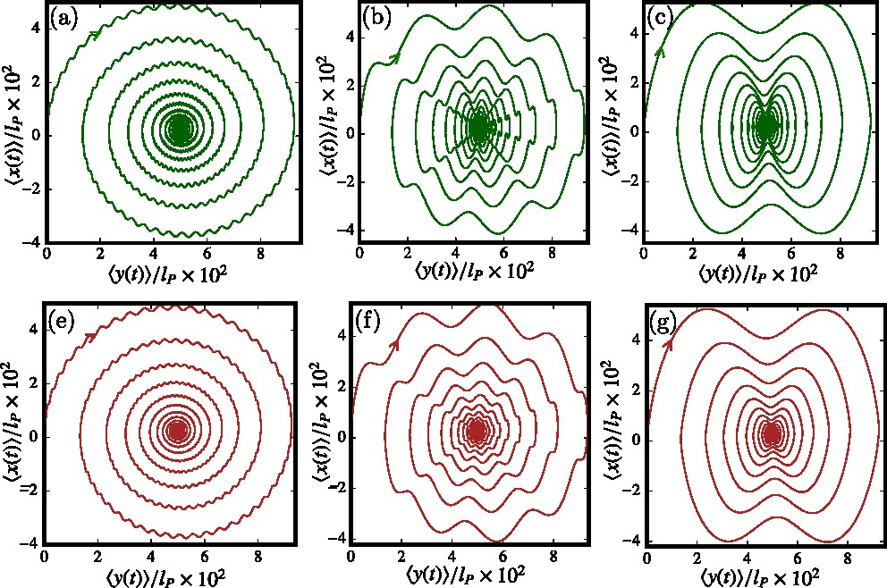
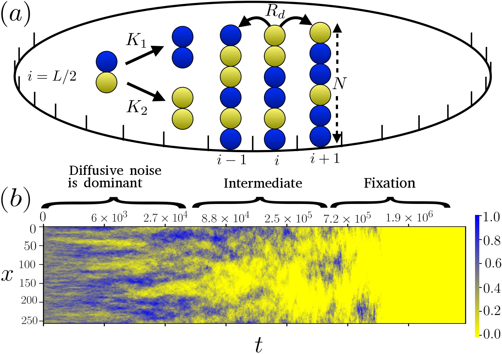
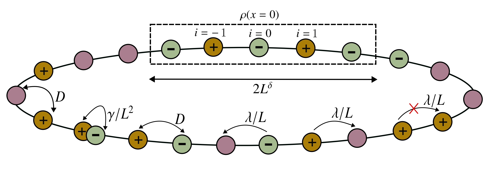
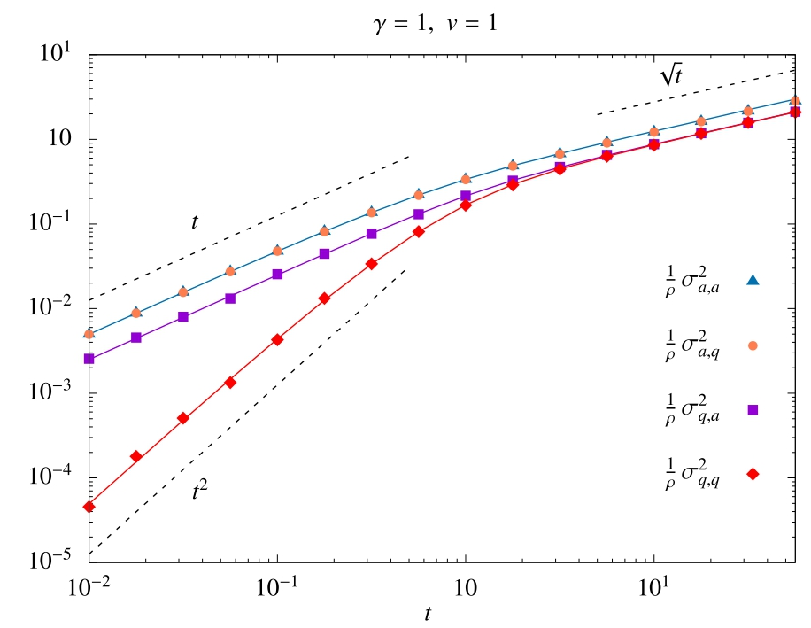
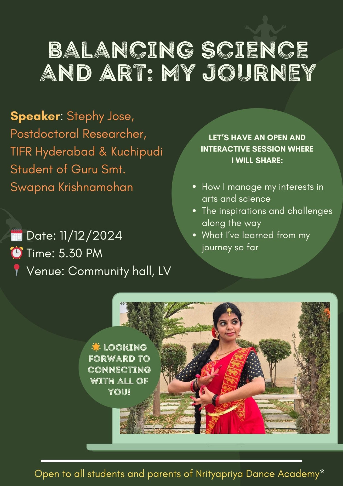

I am a theoretical physicist working at the interface of non-equilibrium statistical physics, active matter, and biophysics. I develop analytical and computational models to discover the fundamental principles governing active and living matter.
About
I completed my PhD at TIFR Hyderabad, India, where I studied active matter across different levels of description: single-particle dynamics, interacting many-body systems, and coarse-grained hydrodynamic theories. At the single-particle level, I obtained exact analytical results for active dynamics such as position probability distibutions, first-passage properties and large deviation functions. At the many-body level, I studied how initial conditions, boundary conditions, and activity affect transport properties of active matter. At the hydrodynamic level, I worked on interacting active matter and fluctuations close to phase separation between dense and dilute phases.
Then, during my Humboldt fellowship at HHU Düsseldorf, Germany, I extended these ideas toward memory effects and stochastic thermodynamics in active systems.
Now, as a Schmidt Science Fellow at MIT Cambridge, USA, I have been moving toward living matter, especially developing theoretical ideas for collective organization and self-assembly in marine organisms such as sea sponges.
Overall, my trajectory has taken me from rigorous theoretical modeling of nonequilibrium systems to biologically motivated and experimentally grounded problems in living matter.
Research Interests
Education
University of Hyderabad — CGPA 9.6/10, University Gold Medalist
Mahatma Gandhi University, Kerala — CGPA 9.9/10, University Silver Medalist
Research
Self-organization in sea-sponge cell aggregates · MIT · Now
Exploring origins of multicellularity

Throughout my PhD I built theoretical descriptions of active matter, and I wanted to see these ideas come to life. By active matter, I mean systems whose constituents continuously consume energy to move, exert forces, or change states, operating inherently far from equilibrium. What makes this fascinating is that even simple active units can collectively organize into structures that are not imposed externally. Living systems are among the richest examples of active matter, and I want to connect these two levels. On one side are minimal active-matter models, where we can write down microscopic dynamics and derive theory. On the other side are iving systems, where collective organization is tied to biological functions such as cell sorting, multicellular assembly, and self-organization. Bridging these two worlds is precisely why I joined MIT as a Schmidt Science Fellow.
Interesting questions:
- What microscopic ingredients are sufficient to generate collective behavior? For example: activity, interactions, density, persistence, and noise
- How do we build fluctuating hydrodynamic and stochastic-thermodynamic descriptions of these systems?
- How can these ideas help us understand living self-organization, such as cell sorting and multicellular assembly?
Why sponges?
The broad biological motivation is the origin of multicellularity: how can a collection of motile cells organize into a coherent multicellular body? Sponges are a compelling model system because they are among the earliest-branching animals (600–700 million years), many of their cells remain motile and plastic, and dissociated cells can reaggregate and reorganize into multicellular structures. This lets us experimentally observe the rebuilding of multicellular organization from cell collectives. The full cycle: multicellular organism → dissociation into individual cells → aggregation → reorganization gives a direct way to study how local cell-level interactions generate collective multicellular structure. From a statistical-physics perspective, the key questions are: what are the minimal ingredients that control this self-assembly? What aggregation states exist, what controls them, and how does the system assemble in time? What decide whether we get droplets, transient networks, or stable networks? And how do cell type, cell state, or self/non-self recognition enter? Does the system show active remodeling or proofreading-like behavior? Do unstable motifs disappear faster? Does organization improve through internal rearrangement rather than only cluster growth? And in mixed-cell experiments, do local mixed configurations become progressively more ordered over time?
From the lab
Check out some fascinating recent work from the Fakhri Lab at MIT, which explores non-equilibrium physics in living systems:
Memory effects in active matter · HHU
Jerky chiral active particles: where third-order dynamics meets beautiful trajectories

During my Humboldt Fellowship with Hartmut Löwen at HHU Düsseldorf, I studied chiral active matter: self-propelled particles that don't just swim forward but systematically turn, tracing curved, circular paths. Think of a bacterium with a slightly lopsided motor such that it always veers to one side. On top of this chirality, I asked what happens when the particle has memory: instead of responding instantly to forces, its motion carries a lag. Mathematically, this means going beyond velocity and acceleration to the next derivative: the jerk, or the rate of change of acceleration (the lurch you feel when a car's braking suddenly eases). Including jerk turns the usual equation of motion into a third-order differential equation, which is unusual in physics and encodes a form of short-term memory in how the particle accelerates.
What's remarkable is how much richness this single extra ingredient unlocks. We derived exact results for the particle's mean displacement and mean-squared displacement, and found that jerk imprints anomalous fluctuations and oscillations on the otherwise steady circular swimming. The resulting mean trajectories form a whole family of Lissajous patterns: the elegant, looping figures you get when two oscillations of different frequencies combine (the same curves once traced on oscilloscope screens). Depending on the balance of timescales, these curves can gently damp down, explode outward, or spiral as a spira mirabilis (logarithmic spiral).
Reference: S. Jose & H. Löwen, “Jerky chiral active particles,” New Journal of Physics 27, 115003 (2025).
Evolutionary models in population genetics · TIFR
How noise from migration reshapes genetic diversity

Evolutionary models let us ask a deceptively simple question with far-reaching consequences: how does genetic diversity in a population change over space and time? In the real world, organisms don't mix freely. They live in patches, reproduce locally, and migrate to nearby regions. Over generations, random reproduction and migration cause different genetic variants (alleles) to segregate into growing spatial domains, a process called genetic demixing. Understanding this matters well beyond biology: the same mathematics governs range expansions of bacteria, tumor evolution, and the loss of diversity at the frontiers of spreading populations. The classic framework for this is the stepping-stone model, a cornerstone of spatial population genetics, in which space is divided into a lattice of "demes" (local sub-populations) that exchange individuals with their neighbors.
In our work, we revisited a piece of physics that standard treatments of this model had long overlooked: the diffusive noise that arises from the randomness of migration itself. Starting from the microscopic rules, we derived an exact fluctuating hydrodynamic description of the stepping-stone model; a continuum theory that faithfully carries the fluctuations of the underlying discrete dynamics. Using this, together with macroscopic fluctuation theory and Monte Carlo simulations, we showed that this migration noise significantly alters early-time demixing: the loss of heterozygosity (a key measure of genetic diversity) and the scaling of density fluctuations are dominated by diffusive noise at early times.
Reference: R. Bhutia, S. Jose, P. Perlekar & K. Ramola, “Diffusive noise controls early stages of genetic demixing,” arXiv:2505.23698 (2025).
Current fluctuations in an interacting active lattice gas · TIFR
Fluctuations near the critical point of motility-induced phase separation

Instead of tracking every particle, physicists often describe large driven systems through a few slowly varying fields such as density, polarization and associated currents. The powerful framework for doing this rigorously is fluctuating hydrodynamics, and its large-deviation counterpart, Macroscopic Fluctuation Theory (MFT). These coarse-grained theories don't just predict average behavior; they capture the fluctuations the rare, large excursions of currents and densities which in nonequilibrium systems can encode phase transitions and diverging response. Read a detailed introduction to fluctuating hydrodynamics & MFT →
In this work, we studied a lattice gas of interacting active particles that hop with a persistent direction while respecting excluded-volume interactions. Such systems undergo motility-induced phase separation (MIPS), where purely repulsive active particles spontaneously condense into dense and dilute phases. Using a fluctuating-hydrodynamic description, we computed the statistics of the time-integrated particle current and showed that these current fluctuations diverge as the system approaches the MIPS critical point — a clear dynamical signature of the underlying phase transition in the fluctuations of transport itself.
Reference: S. Jose, R. Dandekar & K. Ramola, “Current fluctuations in an interacting active lattice gas,” J. Stat. Mech. (2023) 083208.
Generalized disorder averages & the role of initial conditions · TIFR
Can a system remember its starting conditions at infinity?

In many-particle systems we usually ask about steady-state properties, forgetting how the system was prepared. But the initial condition can leave a permanent fingerprint on the fluctuations. Consider counting how many particles cross the origin up to time t. Its statistics depend on whether we average over every possible starting configuration, or fix a single typical one. This is exactly the distinction between annealed and quenched averages, borrowed from the physics of disordered systems and spin glasses. There, quenched disorder (frozen impurities) is averaged after taking the free energy, while annealed disorder is averaged directly and the two can yield qualitatively different physics. Here, the "disorder" is simply the randomness in the initial positions and velocities of the particles.
Active particles make this richer than the passive case. Because a run-and-tumble particle carries two degrees of freedom: its position and its internal direction. One can construct a density field and a magnetization field, and average over each in a quenched or annealed way. We derived exact results showing that these generalized disorder averages lead to strikingly different current fluctuations. In related work we also showed how these effects manifest in finite systems and quantified the role of initial conditions in non-interacting active and passive systems.
References:
S. Jose, A. Rosso & K. Ramola,
“Generalized disorder averages and current fluctuations in run-and-tumble particles,”
Phys. Rev. E 108, L052601 (2023).
S. Jose, A. Rosso & K. Ramola,
“Effect of initial conditions on current fluctuations in non-interacting active particles,”
J. Phys. A: Math. Theor. 57, 285002 (2024).
A. Biswas, S. Jose, A. Pal & K. Ramola,
“Current fluctuations in finite-sized one-dimensional non-interacting passive and active systems,”
J. Phys. A: Math. Theor. 58, 035001 (2024).
Single-particle analysis: large deviations & first-passage · TIFR
What one active particle can teach us about rare events and first passage?

Before tackling interacting many-body systems, much can be learned from a single particle. Two questions are especially revealing: how likely are rare, atypical excursions? (large deviations), and how long until the particle first reaches a target? (first passage). Both are sharply modified by activity: the persistent, self-propelled motion that sets active particles apart from ordinary Brownian walkers.
Large deviation functions
A large deviation function quantifies the exponentially small probability of a rare event. If some observable $A$ (say, the particle's displacement per unit time) takes an atypical value $a$, its probability decays as $P(A = a) \sim e^{-t\, I(a)}$, where $I(a)$ is the large-deviation (or rate) function, a kind of generalized free energy for dynamics. It plays the same organizing role in nonequilibrium physics that entropy and free energy play in equilibrium. For a passive (Brownian) particle, motion is driven purely by thermal noise, so the rate function is simple and symmetric. An active particle, by contrast, carries an internal direction and moves ballistically between tumbles; this persistence produces anomalous, non-Gaussian fluctuations and a qualitatively different rate function often with distinct short-time and long-time regimes.
First-passage properties
The first-passage time is the moment a random walker first hits a given target. Physicists care about it because an enormous range of processes are triggered by a first arrival rather than by average behavior: a diffusing protein finding its binding site, a neuron firing when its potential first crosses threshold, a chemical reaction initiated on first encounter, or a forager locating food. First-passage theory turns these into precise, solvable questions. For active particles, persistence changes the picture dramatically: a run-and-tumble walker can reach nearby targets faster than a diffusive one (it ballistically sweeps outward), yet its statistics on a lattice depend intricately on dimension, tumbling rate, and geometry. I derived exact first-passage results for active random walks in one and two dimensions, revealing how activity reshapes hitting-time distributions relative to the passive case.
Background references:
S. Redner, A Guide to First-Passage Processes (Cambridge University Press, 2001);
H. Touchette, “The large deviation approach to statistical mechanics,”
Physics Reports 478, 1 (2009).
My papers:
S. Jose, D. Mandal, M. Barma & K. Ramola,
“Active random walks in one and two dimensions,”
Phys. Rev. E 105, 064103 (2022).
S. Jose,
“First passage statistics of active random walks on one and two dimensional lattices,”
J. Stat. Mech. (2022) 113208.
Publications
- Diffusive noise controls early stages of genetic demixing Under review — arXiv:2505.23698 (2025) View on arXiv →
- Jerky chiral active particles New Journal of Physics 27, 115003 (2025) View article →
- Current fluctuations in finite-sized one-dimensional non-interacting passive and active systems J. Phys. A: Math. Theor. 58, 035001 (2024) View article →
- Effect of initial conditions on current fluctuations in non-interacting active particles J. Phys. A: Math. Theor. 57, 285002 (2024) View article →
- Generalized disorder averages and current fluctuations in run-and-tumble particles Physical Review E 108, L052601 (2023) View article →
- Current fluctuations in an interacting active lattice gas J. Stat. Mech. 2023, 083208 (2023) View article →
- First passage statistics of active random walks on one and two dimensional lattices J. Stat. Mech. 2022, 113208 (2022) View article →
- Active random walks in one and two dimensions Physical Review E 105, 064103 (2022) View article →
Curriculum Vitae
⬇ Download full CV (PDF)Contact
I am always happy to discuss research, collaborations, and outreach. Feel free to reach out.
Affiliation
Condensed Matter Theory & Physics of Living Systems (PLS)
Massachusetts Institute of Technology
Cambridge, MA, USA
Profiles
Media & Outreach

From PhD to Postdoc: My Path to the Humboldt Fellowship
A personal account of my journey and advice on applying for the Humboldt Research Fellowship.
 ▶
▶
In Focus: Active Matter Research
Presenting my graduate research on active matter in the TIFR Hyderabad video series.

Balancing Science and Art: My Journey
A talk on navigating life as both a scientist and an artist.
Gallery
A glimpse of talks, conferences, fellowship events, and life beyond the equations.